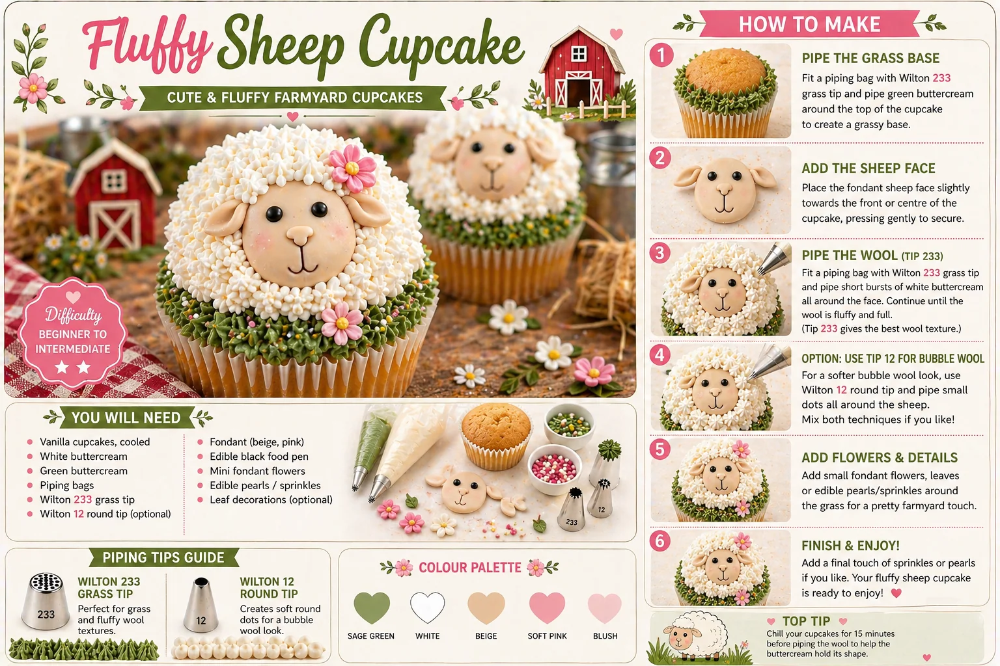
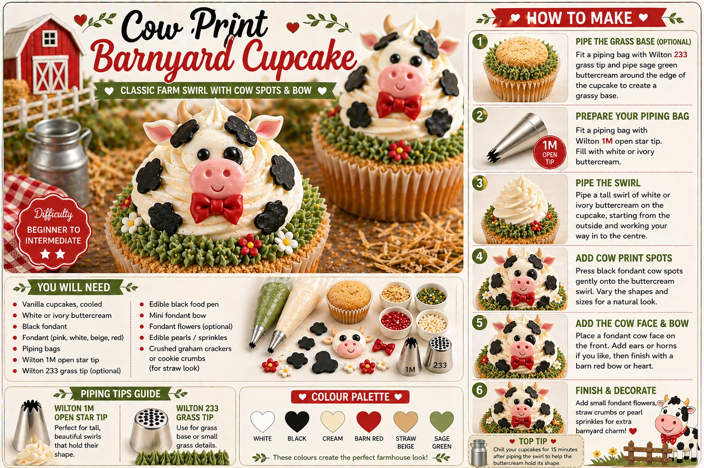

Farm cupcakes are a sweet, playful and very child-friendly idea for a birthday party table. With fluffy sheep, cow-print swirls, barnyard colours, tiny flowers and rustic details, they work beautifully alongside farm balloons, animal cakes, hay-style props and wooden dessert stands.
At Little Moment Studio, we create balloon displays and styled celebration setups for birthdays across Kent and the surrounding areas. While we do not make cupcakes ourselves, we love helping families plan a party look where the balloons, backdrop, colours and dessert table all feel coordinated.
This guide focuses on two easy farm cupcake designs: a Fluffy Sheep Cupcake and a Cow Print Barnyard Cupcake. Both are cute, photo-friendly and achievable with the right piping tips.
If you would like cupcakes or a cake to complement your farm balloon display, we are happy to recommend a trusted local cake maker.
Why Farm Cupcakes Work So Well
Farm cupcakes are ideal for children’s parties because the theme is instantly recognisable. Sheep, cows, pigs, chicks, barns and tractors are all easy details to turn into cupcake decorations.
They work especially well for:
- farm party dessert tables
- barnyard birthday parties
- first birthday farm themes
- animal-loving children
- rustic party styling
- soft neutral birthday setups
- red barnyard balloon displays
A farm cupcake table can feel colourful and playful, or soft and neutral, depending on the palette you choose.
Farm Cupcake Colour Palette
For a classic farm cupcake table, use a mix of soft neutral colours with small barnyard accents. Keeping the base soft and using barn red or pink as small accent colours gives a more considered, premium look than using too many bright colours at once.
| Colour | Best Use |
|---|---|
| White | Sheep wool, cow base, soft cupcake details |
| Cream | Buttercream, neutral cupcake cases and farm styling |
| Black | Cow print spots and eyes |
| Barn red | Bows, barn details and small accents |
| Sage green | Grass, leaves and soft farm base |
| Straw beige | Biscuit crumbs, hay effect and rustic styling |
| Soft pink | Flowers, pig details and cheeks |
Fluffy Sheep Cupcakes

The fluffy sheep cupcake is the standout design of the two. It works beautifully for farm parties, first birthdays and soft barnyard dessert tables. The Wilton 233 grass tip creates the short, textured strands that give the sheep its fluffy wool finish — an effect that is immediately recognisable and very photogenic.
What You Will Need
| Item | Purpose |
|---|---|
| Vanilla cupcakes, cooled | Cupcake base |
| White buttercream | Sheep wool |
| Sage green buttercream | Grass base |
| Piping bags | One for each colour |
| Wilton 233 grass tip | Grass base and fluffy wool texture |
| Wilton 12 round tip | Optional bubble-wool method |
| Beige fondant | Sheep face |
| Soft pink fondant | Cheeks |
| Edible black pearls or black fondant | Eyes |
| Mini fondant flowers | Detail around grass base |
| Edible pearls or sprinkles | Finishing detail |
Best Piping Tips for the Sheep Cupcake
The Wilton 233 grass tip is the most important tip for this design. It creates the short, textured strands that make the sheep look fluffy and gives both the green grass base and the white wool their characteristic texture. The Wilton 12 round tip is a useful alternative for a softer, bubble-wool look made from small piped dots — or use both together for a more varied finish. Avoid the 1M for this design; it creates a swirl, not a fleece.
How to Make Fluffy Sheep Cupcakes
- Pipe the grass base. Fit a piping bag with a Wilton 233 grass tip and fill with sage green buttercream. Pipe a grass base around the top edge of the cupcake to create the farmyard pasture and give the sheep a green border.
- Add the sheep face. Make a simple sheep face from beige fondant. Add small black eyes, soft pink cheeks, tiny ears and a simple mouth. Place the face slightly forward on the cupcake, pressing gently so it sits securely.
- Pipe the wool. Switch to white buttercream in a bag fitted with the Wilton 233 grass tip. Pipe short bursts of buttercream around the sheep face, building up a full, fluffy ring. Continue until the sheep looks rounded and woolly.
- Optional: bubble wool method. For a softer look, use a Wilton 12 round tip and pipe small dots around the face instead. You can also combine both — use the 233 for the main wool body and the 12 for a few rounder details at the edges.
- Add flowers and details. Place small fondant flowers and leaves around the grass base. Soft pink, white and yellow flowers work especially well. Add a few pearl sprinkles for a light finishing touch.
- Finish and chill. Add any final sprinkles or tiny fondant details, then chill briefly if the room is warm. This helps the buttercream hold its shape before displaying on the dessert table.
Tips for Better Sheep Cupcakes
Use a fairly stiff buttercream so the grass and wool texture holds properly. Pipe the green grass base before adding the sheep face — it creates a cleaner frame. Keep the fondant face lightweight and use flowers sparingly; a few small details look prettier than covering every cupcake.
Cow Print Barnyard Cupcakes

The cow print cupcake gives the tray a second design that feels bold, fun and very farm-themed. It contrasts nicely with the fluffy sheep because it uses a tall, classic swirl rather than a textured wool finish — giving the whole dessert table height variation and visual interest.
What You Will Need
| Item | Purpose |
|---|---|
| Vanilla cupcakes, cooled | Cupcake base |
| White or ivory buttercream | Main swirl |
| Sage green buttercream | Optional grass base |
| Piping bags | One for each colour |
| Wilton 1M open star tip | Main buttercream swirl |
| Wilton 233 grass tip | Optional green grass base |
| Black fondant | Cow print spots |
| Fondant in white, beige and red | Cow face and bow detail |
| Edible black food pen | Face details |
| Mini fondant bow | Barn red accent |
| Crushed biscuit crumbs | Optional straw and hay effect |
| Edible pearls or sprinkles | Finishing detail |
Best Piping Tips for the Cow Cupcake
The Wilton 1M open star tip creates a tall, defined swirl with enough surface area to hold the cow-print spots and face topper. The Wilton 233 grass tip adds an optional green grass base around the edge, making the cupcake feel like a complete barnyard scene and helping both designs look like a coordinated set.
How to Make Cow Print Barnyard Cupcakes
- Pipe the optional grass base. Fit a piping bag with a Wilton 233 grass tip and sage green buttercream. Pipe around the edge of the cupcake to create a grass border. This step is optional but makes the finished cupcake feel more complete and helps it match the sheep design.
- Pipe the swirl. Fit a piping bag with a Wilton 1M open star tip and fill with white or ivory buttercream. Start from the outside edge and work inwards and upwards to create a tall swirl with good height — enough to hold the cow spots and face detail.
- Add the cow print spots. Roll black fondant thinly and cut irregular cow-print shapes by hand. Vary the sizes so the pattern looks natural. Press the spots gently onto the buttercream swirl while it is still soft so they adhere properly.
- Add the cow face and bow. Place a small fondant cow face towards the front of the cupcake. Add tiny ears, optional small horns, and a barn-red fondant bow as a detail. Keep the face light and not too large so the swirl holds its shape.
- Finish with farm details. Add small fondant flowers, a few pearl sprinkles and, for a rustic look, sprinkle crushed biscuit crumbs around the base of the cupcake to suggest hay or straw.
- Chill before display. Chill the piped cupcakes briefly — around 10 to 15 minutes — before displaying or transporting. This helps the fondant spots and face topper stay in place.
Tips for Better Cow Print Cupcakes
Use irregular black spots rather than perfect circles — cow print looks most natural when the shapes are uneven. Keep the red bow small so it adds a colour accent without overpowering the cupcake. Add biscuit crumbs close to the event so they stay crisp on the day.
Sheep vs Cow: How They Work Together
These two designs complement each other because they create different visual effects from the same colour palette. The sheep is soft and textured; the cow is tall and graphic. Together on a tray, they give variety without looking like two separate decisions.
| Design | Style | Main Tip | Best For |
|---|---|---|---|
| Fluffy Sheep Cupcake | Soft, textured, gentle | Wilton 233 grass tip | Cutest design on the table |
| Cow Print Cupcake | Tall, bold, graphic | Wilton 1M open star tip | Strong contrast alongside the sheep |
Box of 12:
| Quantity | Design |
|---|---|
| 6 | Fluffy Sheep Cupcakes |
| 6 | Cow Print Barnyard Cupcakes |
Matching Farm Cupcakes with Balloons
Farm cupcakes look best when the balloon colours repeat the same soft barnyard palette. The cupcakes do not need to match the balloons exactly — they just need to share the same colour family so the whole table feels connected.
| Balloon Colours | Cupcake Idea |
|---|---|
| Cream, barn red and sage | Classic barnyard sheep and cow cupcakes with red bow detail |
| Cream and sage green | Soft sheep cupcakes with white and sage palette |
| Cream, sage and soft pink | Sheep cupcakes with pink flowers and pig detail accents |
| White, cream and straw beige | Neutral farm cupcakes with biscuit crumb bases and simple toppers |
| Red, white and black | Cow print cupcakes with barn red bows and bold graphic detail |
For a full guide to pairing cupcakes with balloon displays, see how to match cupcakes with your balloon display. For piping tip guidance, see the best piping tips for cupcakes.
Matching Farm Cupcakes with a Dessert Table
These cupcakes work beautifully as part of a farm party dessert table. A complete farm spread could include:
- 6 fluffy sheep cupcakes
- 6 cow print cupcakes
- pig or chick cupcakes as extras
- barn cookies
- tractor cookies
- a farm animal cake
- rustic wooden props and cake stands
- sage and cream balloon styling
For a wider party table, add sweet jars, biscuit crumb trays and farm animal figurines to build up the barnyard scene. A styled dessert table looks most cohesive when every element — including the cupcakes — stays within the same colour palette.
Common Mistakes to Avoid
| Mistake | What to Do Instead |
|---|---|
| Using a 1M tip for sheep wool | Use the Wilton 233 grass tip for the fluffy texture the design needs |
| Soft buttercream on either design | Use a medium-stiff buttercream; chill for 10–15 min if it softens |
| Heavy fondant faces or toppers | Keep fondant pieces lightweight so they sit on, not in, the buttercream |
| Too many colours on the tray | Stick to two or three palette colours with one accent; farm looks better restrained |
| Every cupcake too detailed | Use simpler filler cupcakes alongside the detailed designs for a more natural tray |
| Biscuit crumbs added too early | Add crushed biscuit crumbs close to the event so they stay crisp |
Storage Advice
Farm cupcakes are best decorated close to the event, especially when using fondant faces, flowers and biscuit crumbs. The sheep wool texture from the Wilton 233 can lose definition in a warm or humid environment.
| Situation | Recommendation |
|---|---|
| Same day | Store in a cool, dry place away from direct sun |
| Warm room | Chill briefly before display so buttercream holds shape |
| Fondant toppers | Keep dry and away from moisture |
| Biscuit crumb hay effect | Add near the event so crumbs stay crisp and do not absorb moisture |
| Day before | Store in a covered box in a cool, dry spot; avoid the fridge if possible |
Your Questions Answered
Can you make farm cupcakes the day before?
Yes. Both designs can be made the day before the party. Store them in a covered cupcake box in a cool, dry place. Fondant sheep and cow faces benefit from being made a day ahead as they firm up slightly, which makes them easier to position. Keep fondant away from humidity. Add biscuit crumb details shortly before display so they stay crisp.
What is the best piping tip for fluffy sheep cupcakes?
A Wilton 233 grass tip is the best choice. It creates the short, textured strands that give the sheep its fluffy wool appearance. A Wilton 12 round tip can be used for a softer bubble-wool effect as an alternative or to add variety. Avoid the 1M for sheep wool — it creates a swirl, not a fleece texture.
How do you make cow print spots for cupcakes?
Roll black fondant thinly and cut irregular shapes by hand, varying the sizes so the pattern looks natural. Perfect circles will not give a convincing cow print result. Press the spots gently onto the buttercream swirl while it is still soft so they adhere properly. For best results, chill the cupcake briefly after adding spots before placing the face topper.
How do you make a fondant sheep face?
Shape a small oval or round face from beige fondant. Add black eyes using edible black pearls or tiny fondant dots, soft pink cheeks, and a small simple mouth. Add tiny ears on each side. Leave the face to firm up slightly before placing it on the cupcake. A lightweight face stays in place better than a thick one. Position it before piping the wool around it.
How do you match farm cupcakes to a balloon display?
Repeat the same barnyard palette across the cupcakes and balloons. Barn red, cream, sage green and straw beige work for a classic farm display. For a softer first birthday farm theme, use cream, sage, white and soft pink with only a small amount of red. The cupcakes do not need to be identical to the balloons — they just need to share the same colour family.
What buttercream consistency works best for farm cupcakes?
A medium-stiff buttercream works best for both designs. The Wilton 233 grass tip needs firm buttercream so the short strands hold their shape without collapsing. The 1M swirl also needs buttercream that holds under the weight of fondant spots and a face topper. If it softens, chill it for 10 to 15 minutes before continuing.
Complete the Farm Party Look
Farm cupcakes are one part of a beautiful barnyard birthday table. To make the whole display feel coordinated, match them with the balloon styling, backdrop and table details.
For birthday cupcake inspiration beyond farm themes, see our birthday cupcake ideas guide. For help choosing a colour palette that works across the whole party, see how to choose a colour palette for your balloon display. And for more about first birthday balloon ideas, including farm and animal themes, see our dedicated guide.
At Little Moment Studio, we can help create the balloon garland, backdrop and colour palette for your farm birthday party in Kent. We are also happy to recommend a trusted local cake maker if you would like cupcakes or a cake to complement your balloon display.
Planning a Farm Birthday Party in Kent?
Little Moment Studio creates balloon garlands, backdrops and birthday displays across Sittingbourne and Kent. We can also recommend a trusted local cake maker to complete the table.